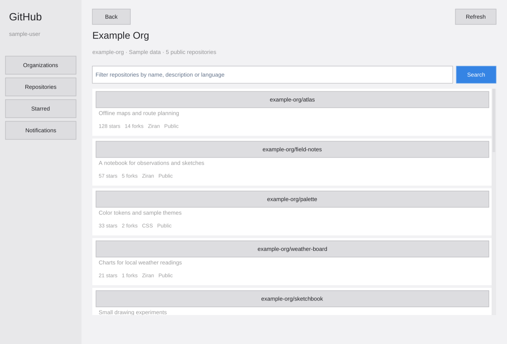

Apps
Apps built with Kryon.
Desktop apps made from the same modules you can use. They are still in development, so each one lists what works today and when you can use it.

Terminal
A desktop terminal for Linux with tabs, sessions and menus.
- Tabs and sessions
- File, Edit, View, Terminal, Tabs and Help menus
- Colors and bold, italic, underlined and reversed text
Release builds are still in progress, and the source is private for now. The Terminal website has the latest news.
- Platform
- Linux desktop
- Status
- In development
- Availability
- Not released yet

Browser
A native document browser with its own HTML parser, CSS cascade and layout. There is no Chromium or WebKit inside.
- Headings, lists, links and preformatted text
- Styles from embedded CSS
- Back and Next keep your place on each page
Not yet: JavaScript, forms, external style sheets, images, flexbox or grid.
Browser is not released yet, and its source is private for now.
- Platform
- Linux desktop
- Status
- In development
- Availability
- Not released yet


GitHub
A desktop client for your GitHub work. It signs in through the GitHub CLI and never asks for a token.
- Organizations, repositories, stars and search
- READMEs, files and branches
- Issues, pull requests, comments, patches and commits
- Releases and Actions jobs
- Notifications
- Star a repository, open an issue or comment
Not yet: editing files, merging pull requests or managing organization settings.
GitHub is not released yet, and its source is private for now.
- Platform
- Linux desktop
- Status
- In development
- Availability
- Not released yet
Shelf
A file explorer for Rill and Taiji OS. It also runs as a standalone app.
Build Shelf from its source with make. make install adds the app, the Rill module and a desktop launcher to ~/.local.
- Platform
- Rill and Taiji OS
- Status
- Available
- Availability
- Build from source
Make your own